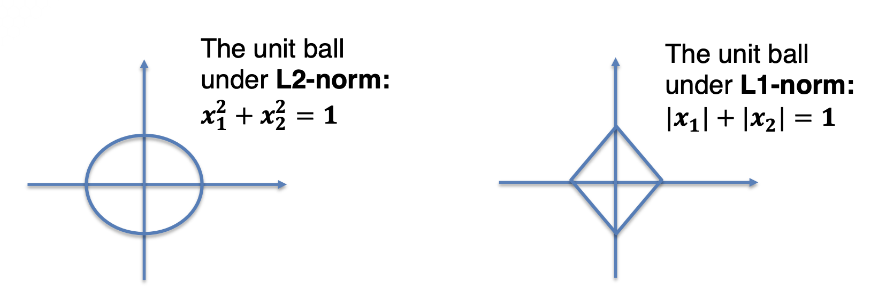
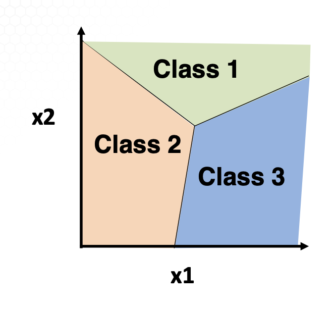
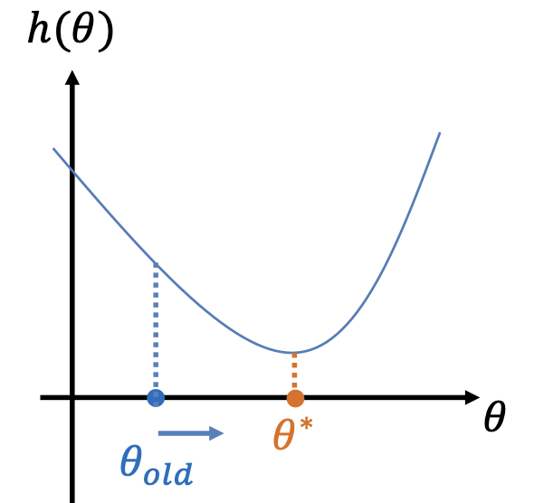
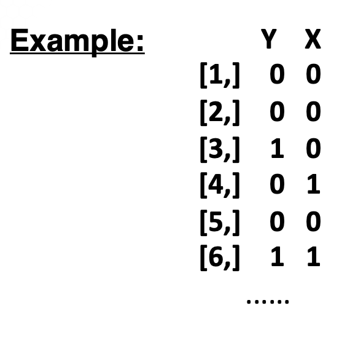

ISYE 7406: Data Mining and Statistical Learning
Table of Contents
- 1. Week 3: Linear Regression (II)
- 2. Week 4: Linear Classification
- 2.1. Overview of Linear Discriminant Analysis (4.1.1)
- 2.2. Linear discrimination analysis continued (4.1.2)
- 2.3. Quadratic Discrimination Analysis classifier (4.1.3)
- 2.4. Logistic Regression: Estimation (4.2.1)
- 2.5. Optimizations in Logistic Regression (4.2.2)
- 2.5.1. Logistic regression recap
- 2.5.2. MLE in logistic regression
- 2.5.3. Optimization problem
- 2.5.4. Optimization algorithms
- 2.5.5. Newton-Raphson Method
- 2.5.6. Taylor Expansion consideration
- 2.5.7. Newton-Raphson Method in Statistics
- 2.5.8. MLE of logistic regression
- 2.5.9. Algorithm for MLE in logistic regression
- 2.6. Simplest logistic regression (4.2.3)
1. Week 3: Linear Regression (II)
M2T2
1.1. James-Stein Estimator
1.1.1. It's a special case of linear regression
in LR model with \[ Y_{n\times 1} = X_{n\times p} \beta_{p\times 1} + \epsilon_{n\times 1}, \text{s.t.} \epsilon \sim N(0, \sigma^2 I_{n\times n}) \]
Special case:
- \(n=p\)
- \(X_{n\times p} = I_{p\times p}\)
OLS yields the estimator of:
\[ \hat{\beta_{ols}} = (X^T X)^{-1} X^T Y = (I^T_{p\times p} I_{p\times p})^{-1} I^T_{p\times p} Y_{p\times 1} = \bf{Y_{p\times 1}} \]
When \(\bf{p\ge 3}\), is it possible to do better than OLS?
1.1.2. Simultaneous estimation
Problem of estimating \(p\) # of parameters \(\beta_i\)'s simultaneously from \(p\) observations (\(Y_i\)'s) under model:
\[ \bf{Y_i} \sim N(\beta_i, \sigma^2), \text{for }i = 1, 2, ..., p \]
OLS (a.k.a. Maximum Likelihood Estimator, MLE) yields estimator:
\[ \hat{\beta_i} = Y_i \text{ for }i = 1, 2, ..., p \]
Is it possible to do better here?
1.1.3. JS estimator
Showed MLS/MLE estimator inadmissible for \(p\ge 3\); dominated by JS estimator.
\[ \hat{\beta_i^{MLE}} = Y_i \text{ for }i = 1, 2, ..., p \]
\[ \hat{\beta_i^{(JS)}} = w Y_i + (1-w) \bar{Y} \text{ for }i = 1, 2, ..., p; \]
\[ w = 1 - \frac{(p-3)\sigma^2}{\sum^p_i(Y_i-\bar{Y})^2} \]
1.1.4. Baseball example
- Observe \(Y_1, Y_2, ... Y_p\) batting averages (where \(Y_i\) is the batting average for p=18 players), 45 AB
- "True" values \(\mu_i\) are the averages over remainder of seasons, 370 AB
- Qn: how to predict season averages \(\mu_i\) from early statistics \(Y_i\)?
- Estimators: MLE and JS
1.1.5. Comparing MLE and JS
- JS has lower predictive squared error than MLS (by 50%)
- JS estimator is shrinkage estimator.
- Each MLE value shrunken towards grand mean
- Data-based estimator, compromises between:
- null hypothesis: all means the same
- MLE assumption: no relationship between all \(\mu_i\) values
- Difficult to estimate \(p\ge 3\) parameters simultaneously.
1.2. Shrinkage Methods
- Estimation in linear regression: JS works in only specific cases (1.1.1) when \(p\ge 3\)
- How to do better generally?
- Shrinkage methods (penalized, regularized)
- Based on subtracting penalty from log-likelihood
- Penalty is a function of decay parameter
- Sort the variables to be included by size of decay parameter
- This reduces to a nested case
- After estimating decay parameter, variable or model selection is complete!
1.2.1. Setting up shrinkage method
- Needs: \(Y_1, x_{11}, x_{12}, ..., x_{1,p}, \text{such that } i = 1,2,...,n\)
- Assume all X & Y are standardized i.e.: \[ \sum^n_{i=1}Y_i = 0, \sum^n_{i=i}x_{ij} = 0, \sum^n_{i=1}x^2_{ij} = 1 \]
If not standardized, do linear transformations: \[ Y^{*}_i = Y_i - \bar{Y} \]
\[ x^{*}_{ij} = \frac{x_{ij}-\bar{x_j}}{\sqrt{\text{Var}_j}} \]
- With this assumption, \(\beta_0 = 0\) in the model, i.e. \[ Y_i = \bf{0 } \beta_1 x_{i1} + \beta_2 x_{i2} + ... + \beta_p x_{i,p} + \epsilon_i \]
The shrinkage method solves this optimization problem
\[ \parallel Y_{n\times 1}-X_{n\times p}\beta_{p\times 1} \parallel^2 + \lambda\sum^p_{j=1}J(|\beta_j|) \]
- penalty function
- \(J(|\beta_j)\)
- decay or tuning parameter
- \(\lambda \ge 0\)
1.2.2. Alternative formulation
- Shrinkage method solves the unconstrained optimization problem \[ \parallel Y_{n\times 1}-X_{n\times p}\beta_{p\times 1} \parallel^2 + \lambda\sum^p_{j=1}J(|\beta_j|) \]
Alternative formulation solves a constrained optimization problem
\[ \min_{\beta} \parallel Y_{n\times 1} - X_{n\times p} \beta_{p\times 1} \parallel^2, \text{ subject to: } \sum^p_{j=1} J(|B_j|) \le s \]
- tuning parameter
- \(s \gt 0\)
- The alternative formulation may greatly facilitate computation at times, e.g. in LASSO which is piecewise linear in \(s\).
1.2.3. Bayesian interpretation
- For LR model (1.1.1):
- prior on β
- \(\pi(\beta)\)
- independent prior on \(\sigma^2\)
- \(\pi(\sigma^2)\)
- posterior for \((\beta, sigma^2)\)
- proportional to \[ \pi (\sigma^2)(\sigma^2)^{(n-1)/2}\exp\{-\frac{1}{2\sigma^2} \parallel Y_{n\times 1} - X_{n\times p} \beta_{p\times 1} \parallel^2 + \log \pi(\beta) \} \]
Posterior maximization method yields shrinkage estimator
\[ \parallel Y_{n\times 1} - X_{n\times p} \beta_{p\times 1} \parallel^2 + \lambda \textbf{Pen}(\beta) \]
1.2.4. Choices of priors
i.e. choice of prior \(\pi(\beta)\)
- Normal prior
- yields ridge regression etsimator
- Laplace prior
- yields LASSO estimator
1.2.5. Ridge regression
Normal prior assumes \(\beta_1 ... \beta_p\) are i.i.d. \(N(0, \tau^2)\) with prior density \[ \pi(\beta) = \prod^p_{i=1} \frac{1}{\sqrt{2\pi}\tau} \exp\left (-\frac{1}{2\tau^2}\beta_i^2\right) \]
Yields ridge regression estimator, which minimizes
\[ \parallel Y_{n\times 1} - X_{n\times p} \beta_{p\times 1} \parallel^2 + \lambda \sum^p_{j=1}(\beta_i)^2 \]
1.2.6. LASSO estimator
- Laplace Prior, assume \(\beta_1 ... \beta_p\) are i.i.d. double-exponential (Laplace) \(\sim \text{Lapalce} (,\tau)\) with prior density \[ \pi(\beta) = \prod^p_{i=1} \frac{1}{2\tau} \exp \left(- \frac{1}{\tau} |\beta_i| \right) \]
Yields LASSO estimator that minimizes
\[ \parallel Y_{n\times 1} - X_{n\times p} \beta_{p\times 1} \parallel^2 + \lambda \sum^p_{j=1}|\beta_i| \]
1.3. Ridge Regression
1.3.1. Ridge Regression Estimator
Assume these are observed: \(Y_i, x_{i1}, ..., x_{ip}\), and all are standardized: \[ \sum^n_{i=1} Y_i = 0, \sum^n_{i=1} x_{ij} = 0, \sum^n_{i=1} x^2_{ij} = 1 \]
In linear regression model without intercepts (1.1.1)
The ridge regression estimator is defined as:
\[ \hat{\beta^{\text{ridge}}} = \min_{\beta} \parallel Y_{n\times 1} - X_{n\times p} \beta_{p\times 1} \parallel^2 + \lambda \sum^p_{j=1}(\beta_i)^2 \]
1.3.2. Mathematical solution
- Explicit expression is thus \[ \hat{\beta^{\text{ridge}}} = (X^T_{n\times p}X_{n\times p}+\lambda I_{p\times p})^{-1} X^T_{n\times p}Y_{n\times 1} \]
- Ridge regression estimator or prediction: \[ \hat{Y}^{\text{ridge}} = X_{n\times p} \hat{\beta^{\text{ridge}}} \]
- Requires choosing the tuning parameter \(\lambda\), based on data, usually by cross-validation
1.3.3. Properties of Ridge Regression
- Ridge regression most useful when \(X_{n\times p}\) is non-singular, but has high collinearity
- i.e. \(X^T_{n\times p} X_{n\times p}\) has eigenvalue close to 0
- \(\hat{\beta^{\text{ridge}}}\) is biased, with bias \(\rightarrow\) 0 as \(\lambda \rightarrow 0\)
- As \(\lambda\) increases, \(\hat{\beta^{\text{ridge}}}\) \(\rightarrow 0\), though rarely = 0.
- Despite the bias, \(\text{Var}(\hat{\beta^{\text{ridge}}})\) will usually be smaller than OLS
- Therefore better prediction than OLS.
1.3.4. Computational issues
- How to compute ridge regression efficiently for any \(\lambda\)? \[ \hat{\beta^{\text{ridge}}} = (X^T_{n\times p}X_{n\times p}+\lambda I_{p\times p})^{-1} X^T_{n\times p}Y_{n\times 1} \]
- It is highly non-trivial to compute the inverse of a large \(p\times p\) matrix.
- Singular Value Decomposition (SVD) algorithm:
- Write the matrix \(X_{n\times p}\) in its SVD form \[ X_{n\times p} = U_{n\times p} D_{p\times p} V^T_{p\times p} \] where: \(U\) and $V are orthogonal; D = diag(\(d_1, ..., d_p\)) is diagonal.
- Then: ridge regression estimator becomes the matrix product: \[ \hat{\beta^{\text{ridge}}} = V_{p\times p} \text{diag} \left(\frac{d_1}{d^2_1 + \lambda}, ..., \frac{d_p}{d^2_p + \lambda} \right) U^T_{p\times n} Y_{n\times 1} \]
1.3.5. Example of SVD
- Find SVD of matrix \[ X_{3 \times 2} = \begin{pmatrix} 1 & 0 \\ 0 & 1 \\ 1 & 1 \\ \end{pmatrix} = U_{n\times p} D_{p\times p} V^T_{p\times p} \]
- Steps (required: \(p \leq n\)):
- \(U_{n\times p}\) is the normalized \(p\) (largest) eigenvectors of \(XX^T\)
- \(V_{p\times p}\) is the normalized eigenvectors of \(X^T X\)
- Matrix \(D = \text{diag}(d_1, ..., d_p)\) with \(d_j\) being the square root of \(p\) (largest) eigenvalues of \(XX^T\) or \(X^T X\).
1.3.6. SVD Example (I): \(XX^T\)
For matrix 1.3.5: we have \[ XX^T = \begin{pmatrix} 1 & 0 & 1\\ 0 & 1 & 1 \\ 1 & 1 &2\end{pmatrix} \]
- Characteristic polynomial is \(-\lambda^3 + 4\lambda^2 - 3\lambda = -\lambda(\lambda-1)(\lambda-3)\)
- The eigenvalues of \(XX^T\) are \(\lambda = 3, 1, 0\)
- Corresponding eigenvectors are: \[ u'_1 = \begin{pmatrix} 1 \\ 1 \\ 2\end{pmatrix}, u'_2 = \begin{pmatrix} 1 \\ -1 \\ 0\end{pmatrix}, u'_3 = \begin{pmatrix} 1 \\ 1 \\ -1\end{pmatrix}, \]
- Normalizing yields \[ U_{3\times 2} = \begin{pmatrix} 1\over{\sqrt{6}} & 1\over{\sqrt{2}} \\ 1\over{\sqrt{6}} & -1\over{\sqrt{2}} \\ 2\over{\sqrt{6}} & 0 \end{pmatrix}, \]
- \(d_1 = \sqrt{3}, d_2 = \sqrt{1} = 1\)
1.3.7. SVD Example (II): \(X^T X\)
For matrix 1.3.5: \[ X^T X = \begin{pmatrix} 2 & 1 \\ 1 & 2 \\ \end{pmatrix} \]
- Characteristic polynomial is \(\lambda^2 - 4\lambda + 3 = (\lambda -1)(\lambda -3)\)
- Eigenvalues of \(XX^T\) are: \(\lambda = 3, 1\).
- Corresponding eigenvalues are: \[ v'_1 = \begin{pmatrix} 1 \\ 1\end{pmatrix}, v'_2 = \begin{pmatrix} 1 \\ -1\end{pmatrix} \]
- Normalizing them yields: \[ V_{2\times 2} = (v_1, v_2) = \begin{pmatrix} 1\over\sqrt{2} & 1\over\sqrt{2} \\ 1\over\sqrt{2} & -1\over\sqrt{2}\end{pmatrix}, \]
- \(d_1 = \sqrt{3}, d_2 = \sqrt{1} = 1\)
1.3.8. SVD verification
Might need to multiply some eigenvectors by -1.
\begin{equation} X_{n\times p} = \begin{pmatrix} 1 & 0 \\ 0 & 1 \\ 1 & 1\end{pmatrix} = \begin{pmatrix} 1\over{\sqrt{6}} & 1\over{\sqrt{2}} \\ 1\over{\sqrt{6}} & -1\over{\sqrt{2}} \\ 2\over{\sqrt{6}} & 0\end{pmatrix} \begin{pmatrix} \sqrt{3} & 0 \\ 0 & 1\end{pmatrix} \begin{pmatrix} 1\over{\sqrt{2}} & 1\over{\sqrt{2}} \\ 1\over{\sqrt{2}} & -1\over{\sqrt{2}}\end{pmatrix} = U_{n\times p} D_{p\times p}V^T_{p\times p} \end{equation} \begin{equation} = \lambda_1 u_1 v^T_1 + \lambda_2 u_2 v^T_2 = 0.5\begin{pmatrix} 1 & 1 \\ 1 & 1 \\ 2 & 2 \end{pmatrix} + 0.5\begin{pmatrix} 1 & -1 \\ -1 & 1 \\ 0 & 0 \end{pmatrix} \end{equation}1.4. LASSO (3.2.1)
1.4.1. LASSO estimator
- Assume these are observed: \(Y_i, x_{i1}, ..., x_{ip}\), and all are standardized:
\[ \sum^n_{i=1} Y_i = 0, \sum^n_{i=1} x_{ij} = 0, \sum^n_{i=1} x^2_{ij} = 1 \]
In linear regression model without intercepts (1.1.1)
- LASSO
- Least Absolute Selection and Shrinkage Operator
- Definition
- \[ \hat{\beta}^{\text{lasso}} = \min_\beta \parallel Y_{n\times 1} - X_{n\times p} \beta_{p\times 1} \parallel^2 + \lambda \sum^p_{j=1} |\beta_j| \]
- s.t.
- tuning parameter \(\lambda > 0\)
1.4.2. L2-norm vs L1-norm

- L1-norm: sparse, as boundary points of the L1-norm ball have lower dimensions (are in lower-dimensional space, \(x_1 = 0, or x_2=0\))
1.4.3. Mathematical solution for LASSO estimator
- In the LASSO optimization, there is no explicit mathematical solution to \(\hat{\beta}^{\text{lasso}}\)
- Hence, need to use computational algorithms to get solution
- Explicit solution only available when \(X^T X = I_{n\times n}\)
In this case, LASSO estimator is:
\begin{equation} \hat{\beta}^{\text{lasso}}_j = \begin{cases} \hat{\beta}_j^{ols} - \frac{\lambda}{2} & \text{if }\hat{\beta}_j^{ols}> \frac{\lambda}{2}\\ 0 & \text{if }|\hat{\beta}_j^{ols}| \leq \frac{\lambda}{2}\\ \hat{\beta}_j^{ols} + \frac{\lambda}{2} & \text{if }\hat{\beta}_j^{ols} < -\frac{\lambda}{2}\\ \end{cases} \end{equation}
As: LASSO can be simplified to 1-dimensional optimization problem
\[ \min_{-\infty < x < \infty} (x - \hat{\beta}_j^{ols})^2 + \lambda |x| \]
since:
\[ \parallel Y - X\beta \parallel^2 = \parallel Y-X\hat{\beta}^{ols} \parallel^2 + (\beta - \hat{\beta}^{ols})^T X^T X(\beta - \hat{\beta}^{ols}) \]
1.4.4. Properties of LASSO
- Good empirical performance when true model is sparse
- If so, outperforms AIC, BIC, stepwise, ridge
- Nice theoretical properties, i.e. high probability of the following under certain regularity conditions:
- parameter recovery
- when \(|\hat{\beta}_j^{lasso}-\hat{\beta}^{true}|^2\) is small
- variable selection
- \(\textbf{supp}(\hat{\beta}_j^{lasso}) = \textbf{supp}(\beta^{true})\)
- prediction error bound
- \(|X\hat{\beta}_j^{lasso} - X\beta^{true}|^2\) is small
1.4.5. LASSO weaknesses
- Not always consistent
- Tends to select over-parameterized model
- Does poorly when
- True model is not sparse
- When few X variables are highly correlated (LASSO picks 1 randomly)
- When the design \(X\) matrix is too correlated (Ridge outperforms)
- When there are outliers in responses
1.4.6. Computation issues of LASSO
- Computation algorithms include:
- Coordinate descent
- Sub-gradient methods
- Proximal gradient methods
- Would be ideal to compute entire solution path all at once, i.e. for all values for \(\lambda\) simultaneously.
1.4.7. LASSO is piecewise linear
- The number of linear pieces in LASSO path is approximately \(p\),
- The computational complexity of getting whole LASSO path is \(O(np^2)\)
- i.e. same cost as computing least-squares fit
1.4.8. Standard error of LASSO
- How to estimate standard error of LASSO estimator i.e. \[ \hat{\beta}^{\text{lasso}} = \min_\beta \parallel Y_{n\times 1} - X_{n\times p} \beta_{p\times 1} \parallel^2 + \lambda \sum^p_{j=1} |\beta_j| \]
- Answer: bootstrapping:
- Fix \(\lambda\), generate a set of bootstrap samples
- Obtain corresponding \(\hat{\beta}^{lasso}(\lambda)\)
- Repeat for \(L\) times and use them to estimate standard error
- If not determined/fixed, \(\lambda\) can be estimated by cross-validation (e.g. 5 fold CV).
1.4.9. Variants of L1-norm
- Elastic net \[ \hat{\beta}^{enet} = \min_\beta \parallel Y_{n\times 1} - X_{n \times p} \beta_{p \times 1} \parallel^2 + \lambda_1 \sum^p_{j=1} |\beta_j| + \lambda_2 \sum^p_j (\beta_j)^2 \]
1.5. Principal Components (3.2.2)
Assume these are observed: \(Y_i, x_{i1}, ..., x_{ip}\) for \(i=1,2,...,n\)
Classical datasets: mostly small values of \(p\); modern datasets: large \(p\).
Essential to conduct dimension reduction to reduce the number of variables.
1.5.1. Dimension reduction
- 2 approaches:
- variable selection, i.e.: AIC, BIC, stepwise algorithm, LASSO, etc.
- feature extraction, i.e. identify which functions of data are most important. no restricted to using existing features/variables. Options are:
- Principal component analysis
- Partial least squares
1.5.2. Motivation of PCA
"Obtain more variance by transforming axes"
- Find linear combinations of \((x_1, ..., x_p)\) that express as much variability in \(X\) as possible.
- A linear combination with high variance will likely affect the response the most
- If most variation of \(X\) comes from the first few PCs then: enough to build models.
- Other linear combination vary so little among different observations → can be ignored
1.5.3. Find the PC's: Population version
- Optimization problem for PC's: Given a \(p\) -dim random vector \[ \textbf{X} = (X_1, ..., X_p)^T, \text{ with covariance } \Sigma = \text{Cov}(X) \]
- PC1: Find \(U_1 = \alpha_1 X_1 + ... + \alpha_p X_p\) that maximizes \[ \textbf{Var}(\alpha_1 X_1 + ... + \alpha_p X_p) = \textbf{Var}(\alpha^T \textbf{X}) = \alpha^T \Sigma \alpha \] subject to: \[ \alpha^2_1 + ... \alpha^2_p = 1, \text{i.e. } \alpha^T \alpha = 1, \text{where } \alpha = (\alpha_1, ..., \alpha_p)^T \]
- PC2: Find \(U_2 = \alpha_1 X_1 + ... + \alpha_p X_p\) that maximizes \text{Var}(αT X) = αT Σα$, subject to constraints: - \(\alpha^T \alpha = 1\)
- \(\text{Cov}(U_1, U_2) = 0\)
- Other (later) PC are defined analogously and uncorrelated with all previous PC's
1.5.4. Eigenvectors lead to PC's
- Theorem: Let covariance matrix \(\bf{\Sigma} = \text{Cov}(\bf{X})\) have eignvectors \(e_1, ..., e_p\) with corresponding eigenvalues \(\lambda_1 \ge ... \ge \lambda_p \ge 0\). For \(j=1,2,...,p\),
- \(j\) -th PC is \[ U_j = e_j^T X = e_{j1}X_1 + ... + e_{jp}X_p \]
- Variance of \(j\) -th PC is \[ \text{Var}(U_j) = \bf{e_j^T\Sigma e_j} = \lambda_j \]
1.5.5. Proof by Lagrange Multipliers
- The Lagrange multiplier is to maximize \[ \phi(\alpha) = \alpha^T \Sigma\alpha - \lambda(\alpha^T \alpha -1) \]
- Setting derivatives qual = 0 gives: \[ \frac{\partial \phi(\alpha)}{\partial\alpha} = 2\Sigma\alpha - 2\lambda\alpha = 0 \]
- Thus: \(\Sigma\alpha = \lambda\alpha\) → λ is an eigenvalue of Σ and α is the corresponding normalized eigenvector.
- For \(U = \alpha^T X\), we have \(\text{Var}(U) = \alpha^T \Sigma\alpha = \alpha^T (\lambda\alpha) = \lambda\).
- For PC1, we need to find largest eigenvector of Σ.
- Proofs of other Pcs are similar.
1.5.6. PCs in Empirical Version
In many real world applications, only given dataset \(Y_i, x_{i1}, ..., x_{ip}\) for \(i=1,2,...,n\) How to find PC's?
- Key idea: estimate the unknown Σ by \(\hat{\Sigma}_{p\times p}\) from the data, then find the PC's by the eigenvalues and eigenvectors of \(\hat{\Sigma}_{p \times p}\)
- Empirical covariance matrix \(\hat{\Sigma}_{p\times p}\) is widely used when \(p
- Here, the \((r,s)\) entry of \(\hat{\Sigma}_{p\times p}\) is defined as: \[ \hat{\Sigma}_{rs} = \frac{1}{n} \sum^n_i(x_{ir}-\bar{x}_r)(x_{is}-\bar{x}_s) \]
- Research tbd on how to estimate \(\Sigma\) effectively when \(p>>n\).
1.5.7. Principal component regression
- Original data: \(Y_i, x_{i1}, ..., x_{ip}\) for \(i=1,2,...,n\)
- After we extract all PC's, raw data can be written as new format \((Y_i, u_{i1}, ..., u_{ip})\) for \(i=1,2,...,n\)
- Principal component regression: linear regression by using only first \(k\) PC's: \[ Y_i = \beta_0 + \beta_1 u_{i1} + ... + \beta_k u_{ik} + \epsilon_i \]
- Choosing \(k\): done by cross-validation.
1.6. Partial least squares (3.2.3)
1.6.1. Dimension reduction
There are 2 kinds of dimension reduction algorithms:
- Unsupervised dimension reduction, e.g. PCA. Criticisms: it explains \(X\) but no reason to be sure that the result also explains a response \(Y\).
- Supervised dimension reduction, i.e. conduct reduction on \(X\) by using the extra information in \(Y\).
- Reasonable to believe that supervised techniques will do better
- Partial least squares is one such technique
1.6.2. Partial least squares
Collection of techniques with 2 common properties:
- Maximizes correlation between \(Y \& X\), rather than maximizing variance of \(Y\) only.
- Can be interpreted as finding the underlying factors of \(X\) that are also underlying factors of \(Y\).
1.6.3. 2 versions of PLS
- Simple PLS algorithm: variant of PC's but using correlation instead of variance
- PLS model: identify common factors of \(X \& Y\)
1.6.4. Simple PLS algorithm
- Given \(Y_i, x_{i1}, ..., x_{ip}\) for \(i=1,2,...,n\)
- Let \(x_i = (x_{i1}, ..., x_{ip})^T\).
- First PLS, \(V_1 = \alpha_1 X_1 + ... + \alpha_p X_p\) is defined as finding \(\alpha = (\alpha_1, ..., \alpha_p)^T\) that maximizes covariance \[ \hat{\textbf{CoV}}(Y, V_1) = \frac{1}{n} \sum^n_i (Y_i-\bar{Y})(v_i-\bar{v}), \] when \(v_i = \alpha_1 x_{i1} + ... + \alpha_p x_{ip}\) for \(i=1,2,...n\) subject to \(\alpha^T \alpha = 1\)
- Later PLSs are defined analogously to maximize the covariance and are assumed to be uncorrelated with all previous PLSs.
- Solution: the \(\alpha\)'s are the eigenvectors of the \(p \times p\) matrix \(X^T Y Y^T X\) when the data matrices \(X \& Y\) have column mean zero.
1.6.5. The PLS model
- Data: \(Y_i, x_{i1}, ..., x_{ip}\) for \(i=1,2,...,n\)
- Assume data have mean 0.
- Write data matrix as \((Y_{n \times q}, X_{n \times p})\)
- Goal: find \(\ell\) linear combinations from \(X \& Y\) to use as new dimensions.
The PLS model: noniterative iterative partial least squares (NIPALS):
\[ X_{n \times p} = T_{n \times \ell} P_{\ell \times p} + E, Y_{n \times q} = U_{n \times \ell} Q_{\ell \times q} + F \] where:
- \(T_{n \times \ell}\) and \(U_{n \times \ell}\) represent \(\ell\) factors
- \(P_{\ell \times p}\) and \(Q_{\ell \times q}\) are loadings.
1.6.6. Key idea in The PLS Model
- How to estimate the ℓ factors, or the \(T_{n \times \ell}\) and \(U_{n \times \ell}\) matrices?
- Answer:
- Write the first column of \(T_{n \times \ell}\) and \(U_{n \times \ell}\) as \(t=\bf{X} r\) and \(u=\bf{Y} s\) for two unit vectors, \(\parallel r \parallel = \parallel s \parallel = 1\)
- Find \(r\) and \(s\) that maximizes the covariance-squared: \(\textbf{Cov}^2(Xr, Ys)\)
1.6.7. PLS for linear regression
- Original data: \(Y_i, x_{i1}, ..., x_{ip}\) for \(i=1,2,...,n\)
- After extracting all PLS's, raw data can be written as new formats \((Y_i, v_{i1}, ..., v_{ip})\) for \(i=1,2,...,n\)
- Partial least squares regression: linear regression using only first k PLSs: \[ Y_i = \beta_0 + \beta_1 v_[i1] + ... + \beta_k v_{ik} + \epsilon_i \]
- Choosing \(k\): by cross-validation
1.6.8. Canonical correlation analysis (CCA)
- CCA: find the unit vectors \((r, s)\) that maximizes the correlation coefficient \[ \text{Corr}(Xr, Ys) = \frac{r^T \Sigma_{XY}s}{\sqrt{r^T \Sigma_{XX}r}\sqrt{s^T \Sigma_{YY}s}} \]
Solution: in the population(?) version with \((X_1, ..., X_p)\) and \((Y_1, ..., Y_q)\), consider \(r^T X = r_1 X_1 + ... + r_p X_p\) and \(s^T Y = s_1 Y_1 + ... + s_q Y_q\), the optimal \(r, s\) values are the respective eigenvectors of
\[ \Sigma^{-1}_{XX} \Sigma^{-1}_{YY} \Sigma_{YX} \text{ and } \Sigma^{-1}_{YY} \Sigma^{-1}_{XX} \Sigma_{XY} \]
2. Week 4: Linear Classification
2.1. Overview of Linear Discriminant Analysis (4.1.1)
Supervised learning recap
- Data: \(Y_i, x_{i1}, ..., x_{ip}\) for \(i=1,2,...,n\)
- Objective: predict \(Y\) for given new input \(x_{\text{new}} = (x_1, ..., x_p)\)
- Types of tasks:
- Regression: why response \(Y\) is continuous
- Regression: When response $Y is binary, or discrete values representing classes
2.1.1. Classification problem
- For \(Y_i, x_{i1}, ..., x_{ip}\) for \(i=1,2,...,n\) where \(Y_i \in {1, 2, ...K}\) is the class label
- Objective: find a decision function to discriminate among data form the \(K\) different classes.
- Learn a decision rule \(h(x) \in {1, 2, ...k}\) used to separate the \(K\) classes
- Predict the class label for new input \(x_{\text{new}}\)
- Example: classifying patients in hospital ER into classes (low, med, high risk) by age, gender, weight, BP, insurance, etc.
- Assign treatment priority to high-risk patients?
2.1.2. Popular classification methods and R packages
- Discriminant analysis
- ?
a- Tree-based classifiers :: rpart
- Boosting
gbm- Random forest
randomForest- Neural networks
nnet- svm
e1071
2.1.3. Discriminant analysis
- A multi-classifier is associated with a \(K\) - dim vector \[ d(x) = (d_1 (x), ..., d_K (x)) \] where \(d_k (x)\) represents the strength of evidence that \(x\) is in class \(k\).
For given new input \(x_{\text{new}}\), predict the class label
\[ \hat{k} = \text{argmax}_{k=1, 2, ..., K} d_k (x_\text{new}) \]
- Discriminant functions \(d_k (x)\) are linear functions of \(x = (x_1, ..., x_p)\)
2.1.4. Example for 3-class problem
 Predict \(Y \in {1,2,3}\) based on \((X_1, X_2)\):
- Class 1 if \(d_1 > \max(d_2, d_3)\)
- Class 2 if \(d_2 > \max(d_1, d_3)\)
Class 3 if \(d_3 > \max(d_1, d_2)\)
In this example, boundaries \({(x_1, x_2): d_i (x_1, x_2) = d_j(x_1, x_2)}\) are linear.
2.1.5. Discriminant functions
How to construct discriminant functions \(d_k (x)\) 's? 3 approaches are available:
- Distance-based discriminant analysis, e.g. \(d_k\) is the distance between the sample mean of the \(k\) -th class and the new input \(x\).
- Bayes Rules
- Probability-based rule, i.e. Logistic Regression
2.1.6. Multi-class vs. Binary
If the number \(K\) of classes is not too large, can simplify the multi-class problems into series of binary problems via two approaches:
- one vs rest
- training binary classifiers with ∂k(X) separating class \(k\) from the rest. It's easy to implement but poor performance if no dominating class. Binary problems are unbalanced.
- pairwise comparison approach
- train \(K(K-1)/2\) binary classifiers. The final class prediction is decided by a voting scheme among all classifiers.
2.2. Linear discrimination analysis continued (4.1.2)
See: 2.1.3.
LDA was first developed as distance-based classification (Fisher, 1936). Alternate interpretation: Bayes.
2.2.1. Bayes classifier
- Under \(0-1\) loss, Bayes classifier is
\[
\text{argmax}_k (P(Y=k | x))
= \text{argmax}_k (\pi_k f_k (x))
= \text{argmax}_k (\log(\pi_k) + \log(f_k (x)))
\]
where:
- \(\pi_k\)
- a prior
- \(f_k\)
- the density function of the \(k\) -th class
2.2.2. Normality asumption
LDA is the Bayes Rule under assumption that densities \(f_k\) are multivariate normal with the common covariance, i.e. \(N(\mu_k, \Sigma)\).
Mathematically, LDA assumes: \[ f_k(x) = \frac{1}{\sqrt{2\pi}|\text{det}(\Sigma)} \exp\left({-\frac{1}{2} (x-\mu_k)^T \Sigma^{-1}(x-\mu_k)}\right) \] for \(k=1,2,...,K\)
2.2.3. Bayes classifier for normal distribution
If the \(f_k\) are normal with common variance, i.e. \(N(\mu_k, \Sigma)\), then the Bayes classification rule is \[ \text{argmax}_k \left( -\frac{1}{2} \text{logdet}(\Sigma) - \frac{1}{2}(x-\mu_k)^T\Sigma^{-1}(x-\mu_k) + \log \pi_k \right) \]
\[ = \text{argmax}_k \left( x^T\Sigma^{-1}\mu_k - \frac{1}{2}\mu^T_k \Sigma^{-1} \mu_k + \log \pi_k \right) \]
since the common variance term drops out.
- Leads to linear discrimination function: \[ d_k(x) = x^T \Sigma^{-1} \mu_k - \frac{1}{2}\mu_k^T \Sigma^{-1} \mu_k + \log \pi_k \]
2.2.4. LDA in practice
- Data: for \(Y_i, x_{i1}, ..., x_{ip}\) for \(i=1,2,...,n\) where \(Y_i \in {1, 2, ...K}\) is the class label
- LDA uses the discrimination function: \[ d_k(x) = x^T \Sigma^{-1} \mu_k - \frac{1}{2}\mu_k^T \Sigma^{-1} \mu_k + \log \pi_k \]
- In practice, parameters are estimated from training data as follows:
- \(\hat{\pi_k}\)
- \(\frac{n_k}{n}\)
- \(\hat{\mu_k}\)
- \(\frac{1}{n_k} \sum_{y_i=k} x_i\) where \(n_k\) is the no. of observations in class \(k\)
- \(\hat{\Sigma}\)
- \(\frac{1}{\sum^K_{k=1}(n_k -1)} \sum^K_{k=1} \sum_{y_i=k}(x_i - \hat{\mu}_k)(x_i-\hat{\mu}_k)^T\) which is the within-class sample variance
2.2.5. LDA for K=2 classes
Classifies into class 2 if and only if
\begin{equation} x_T \hat{\Sigma}^{-1} - \frac{1}{2} \hat{\mu}^T_2 \hat{\Sigma}^{-1} \hat{\mu}_2 + \log \hat{\pi}_2 > x^T \Sigma^{-1}\hat{\mu}_1 - \frac{1}{2} \hat{\mu}_1^T \hat{\Sigma}^{-1} \hat{\Sigma}_1 + \log \hat{\pi}_1 \end{equation}or
\begin{equation} x^T \Sigma^{-1}(\hat{\mu}_2- \hat{\mu}_1) > \frac{1}{2} \hat{\mu}_2^T \hat{\Sigma}^{-1} \hat{\mu}_2 - \frac{1}{2}\hat{\mu}_1^T \Sigma^{-1} \hat{\mu}_1 + \log{\frac{n_1}{n}} - \log{\frac{n_2}{n}} \end{equation}- let \(w=\Sigma^{-1} (\hat{\mu}_2 - \hat{\mu}_1)\), the LHS = \(x^T w = w \cdot x = w_1 x_1 + ... + w_p x_p\), is the projection of the \(p\) -th dimensional vector \(x\) to a real-valued number
2.2.6. Fisher's distance-based approach
- for \(k=2\) classes:
- projects the p-dimensional vector \(\textbf{x}\) to a real-valued number \[ L = \textbf{w} \cdot \textbf{x} = x^T w = w_1x_1 + ... + w_p x_p \]
- Find the optimal direction \(\textbf{w}\) that best separates two classes on the projection line, using training data
- Assign new point \(x\) to class 2 if and only if: \[ \textbf{w} \cdot \textbf{x} > \textbf{w} \cdot \frac{\hat{\mu}_1 + \hat{\mu}_2}{2} \]
Equivalently: assign \(x\) to class 2 if
\begin{equation} x^T \Sigma^{-1}(\hat{\mu}_2- \hat{\mu}_1) > \frac{1}{2} \hat{\mu}_2^T \hat{\Sigma}^{-1} \hat{\mu}_2 - \frac{1}{2}\hat{\mu}_1^T \Sigma^{-1} \hat{\mu}_1 \end{equation}which is the same as Bayes-based LDA when the classes have equal numbers of observations.
2.3. Quadratic Discrimination Analysis classifier (4.1.3)
See 2.1.3. How to choose suitable discriminant functions \(d_k(x)\)?
2.3.1. Bayes classifier
- The discriminant functions \(d_k(x)\) are based on posterior distributions
The Bayes classifier is defined as:
\begin{equation} \text{argmax}_k (P(Y=k|x)) = \text{argmax}_k (\pi_k f_k (x)) = \text{argmax}_k (\log \pi_k + \log f_k (x)) \end{equation}where:
- \(\pi_k\) is a prior
- \(f_k\) is the density function of the \(k\) th class
Question: how to model the density functions \(f_k\)? Normal distribution!
2.3.2. Normal distribution
Univariate normal distribution \(N(\mu, \sigma^2)\)
- Probability density function is given by: \[ p(x) = \frac{1}{\sqrt{2\pi}\sigma} \exp \left( -\frac{1}{2\sigma^2} (x-\mu)^2\right) \]
- parameter estimation of \((\mu, \sigma^2)\) from training data:
- sample mean, \(\hat{\mu}\)
- \(\bar{x} = \frac{1}{n} \sum^n_{i=1}x_i\)
- sample variance, \(\hat{\sigma}^2\)
- \(\frac{1}{n-1} \sum^n_{i=1} (x_i - \bar{x})^2\)
- properties: the components of \(X\) are independent iif \(\Sigma\) is diagonal!
2.3.3. Normal model for \(f_k\)
- See 2.1.3
- Bayes classifier: \(\text{argmax}_k (\log \pi_k + \log f_k (x))\) where \(\pi_k\) is a prior and \(f_k\) is the pdf of the \(k\) th class.
- Model: assume pdfs \(f_k(x) = f_k(x_1, ..., x_p) \sim N(\mu_k, \Sigma_k)\)
- Question: how to estimate \((\mu_k, \Sigma_k)\)?
2.3.4. Three approaches to estimate
Different assumptions:
- Linear discriminant analysis
- When \(\Sigma_k \equiv \Sigma\) (common variance), estimated by within-sample covariance
- Quadratic discriminant analysis
- when \(\Sigma_k\) is estimated by the sample covariance of the \(k\) -th class
- Naive Bayes
- when each component of \(\textbf{X}\) is independent, i.e. when \(\Sigma_k \equiv \Sigma = \text{diag}(\sigma^2_{k1}, ..., \sigma^2_{kp})\)
2.3.5. QDA classifier
- Assumes that \(f_k\) are normal \(N(\mu_k, \Sigma_k)\)
- Assigns data \(x\) to the class: \[ \text{argmax}_k \left( -\frac{1}{2} \log \text{det}(\Sigma_k) - \frac{1}{2}(x-\mu_k)^T \Sigma^{-1}_k (x-\mu_k) + \log \pi_k \right) \]
- In practice, estimated from training data:
- \(\hat{\pi}_k\)
- \(\frac{n_k}{n}\)
- \(\hat{\mu}_k\)
- \(\frac{1}{n_k} \sum_{y_i = k} x_i\) where nk is the no. of observations in class \(k\)
- \(\hat{\Sigma}_k\)
- \(\frac{1}{n_k-1} \sum_{y_i=k} (x_i-\hat{\mu}_k)(x_i - \hat{\mu}_k)^T\) which is the sample covariance of class \(k\)
2.3.6. Naive Bayes classifier
- Assumes that \(\Sigma_k \equiv \Sigma = \text{diag}(\sigma^2_{k1}, ..., \sigma^2_{kp})\), or equivalently: \[ f_k(x) = f_k (x_1, ..., x_p) = \prod^p_{j=1} f_{kj}(x_j), f_{kj} \sim N(\mu_{kj}, \sigma^2_{kj}) \]
- Assigns \(x\) to class \(\text{argmax}_k (\pi_k \prod^p_{j=1}) f_{k,j}(x_j)\)
- In practice, parameters \((\mu_{kj}, \sigma^2_{kj})\) estimated from the \(j\) -th component of \(X\) variables for \(k\) -th class in training data:
- \(\hat{\pi}\)
- \(\frac{n_k}{n}\)
- \(\hat{\mu}_{kj}\)
- \(\frac{1}{n_k} \sum_{y_i = k} x_{ij}\)
- \(\hat{\sigma^2_{kj}}\)
- \(\frac{1}{n_k-1} \sum_{y_i = k} (x_{ij}-\bar{x}_j)^2\)
2.3.7. General Naive Bayes classifier
- Ignore any dependence between explanatory variables and assume that \(X_j\)'s are independent.
- Thus, corresponding classifier is \[ \text{argmax}_k (\pi_k \prod^p_{j=1}f_{k,j}(x_j)) \]
- In practice, marginal densities \(f_{k,j} (\cdot)\) are usually assumed to be parameterized by some parameters, which must be estimated, e.g.:
- Gaussian Naive Bayes
- Bernoulli Naive Bayes
- Multinomial Naive Bayes
- Poisson Naive Bayes
2.4. Logistic Regression: Estimation (4.2.1)
2.4.1. Classification methods
- With data \((Y_i, X_i)\) for \(i=1,...,n\), where \(Y_i\) is the class label
- Two approaches to develop classifiers:
- Model conditional densities \(f_k = p(\textbf{X}|Y=k)\) at the given \(k\) -th class
- Normality assumption on X: LDA, QDA, Naive Bayes
- Model the conditional density \(P(Y=k|\textbf{X})\) directly:
- Bernoulli assumption on Y: Logistic Regression
- Model conditional densities \(f_k = p(\textbf{X}|Y=k)\) at the given \(k\) -th class
2.4.2. Binary logistic regression
- With data: \((Y_i, x_{i1}, ..., x_{i,p-1})\) for \(i=1,...,n\), where \(Y_i \in {0,1}\) is the class label
- Logistic regression defined as 2 components:
- Model the response \(\textbf{Y}\) as Bernoulli distribution: \[ P(Y_i=1) = \pi_i \\ P(Y_i = 0) = 1-\pi_i \]
- Link the model parameters to the independent \(\textbf{X}\) variables: \[ \log \frac{\pi_i}{1-\pi_i} = \beta_0 + \beta_1 x_{i1} + ... + \beta_{p-1} x_{i,p-1} \] with \(p\) = number of \(\beta\) coefficients
2.4.3. Conditional probability
- Under logistic regression, at given \(X=(x_1, ..., x_{p-1})\), the conditional probabilities are \[ P(Y=1|X) = \pi = \frac{e^{\beta_0 + \beta_1 x_1 + ... + \beta_{p-1} x_{p-1}}}{1+ e^{\beta_0 + \beta_1 x_1 + ... + \beta_{p-1} x_{p-1}}} \\ P(Y=0|X) = 1-\pi = \frac{1}{1+ e^{\beta_0 + \beta_1 x_1 + ... + \beta_{p-1} x_{p-1}}} \]
2.4.4. Statistical inference
Statistical questions in logistic regression:
- How to estimate the \(\beta\) parameters in the logistic regression model from training data?
- How to conduct hypothesis testing or get confidence interval?
- How to use logistic regression model for prediction?
2.4.5. Maximum likelihood estimation
- The likelihood function of the logistic regression model is \[ L(\beta) = \prod^n_{i=1} \pi_i^{y_i} (1-\pi_i)^{1-y_i} \\ = ... \\ = \prod^n_{i=1} \frac{e^{y_i(\beta_0 + \beta_1 x_{i1} + \beta_2 x_{i2} + ... + \beta_{p-1} x_{i,p-1})}}{1+e^{\beta_0 + \beta_1 x_{i1} + \beta_2 x_{i2} + ... + \beta_{p-1} x_{i,p-1}}} \]
- MLE \(\hat{\beta}\) of the \(\beta_i\) 's can be found by maximizing \(L(\beta)\).
2.4.6. Asymptotic properties of MLE
MLE \(\hat{\beta}\) has nice asymptotic properties: \[ \hat{\beta} \sim N(\beta, I^{-1}_{p\times p}) \] where \(I_{p\times p}\) is the observed Fisher Information Matrix defined by the negative values of the 2nd order derivatives of the log-likelihood function (\(\log L(\beta)\)) at \(\hat{\beta}\), i.e.
\[ I_{p\times p} = (-\frac{\partial^2\log L}{\partial \beta_i \partial \beta_j})|_{\hat{\beta}} \]
2.4.7. Other link function
- With data: \((Y_i, x_{i1}, ..., x_{i,p-1})\) for \(i=1,...,n\), where \(Y_i \in {0,1}\) is the class label
- Generalized linear model: two steps
- \[ P(Y_i = 1) = \pi_i, P(Y_i = 0) = 1-\pi_i \]
- \[ g(\pi_i) = \beta_0 + \beta_1 x_{i1} + \beta_2 x_{i2} + ... + \beta_{p-1} x_{i, p-1} \] where \(g(\cdot): (0,1) \rightarrow (-\infty, infty)\) is called a link function
- Other link functions available:
- Normal/probit link: \(g=\phi^{-1}\) where \(\phi(t) = P(N(0,1) \le t)\) is the c.d.f. of the normal distribution
2.4.8. Logistic or LDA?
Comparison:
- Similar: both have discriminant functions that are linear combinations of independent \(X\) variables
- Difference: how to estimate linear coefficients
- LDA: assume \(X|Y = k\) is Gaussian
- Logistic regression: ignore \(\textbf{P(X)}\)
- Generally, logistic regression is thought to be safer & more robust than LDA
- Often, same results
2.5. Optimizations in Logistic Regression (4.2.2)
2.5.1. Logistic regression recap
- With data: \((Y_i, x_{i1}, ..., x_{i,p-1})\) for \(i=1,...,n\), where \(Y_i \in {0,1}\) is the class label
- Logistic regression model defined as 2 components \[ P(Y_i=1) = \pi_i \\ P(Y_i = 0) = 1-\pi_i \\ \log \frac{\pi_i}{1-\pi_i} = \beta_0 + \beta_1 x_{i1} + ... + \beta_{p-1} x_{i,p-1} \]
- Question: how to estimate the \(\beta_i\) in the model?
2.5.2. MLE in logistic regression
As seen previously, MLE can be found by maximizing likelihood function: \[ L(\beta) = \prod^n_{i=1} \frac{e^{y_i(\beta_0 + \beta_1 x_{i1} + \beta_2 x_{i2} + ... + \beta_{p-1} x_{i,p-1})}}{1+e^{\beta_0 + \beta_1 x_{i1} + \beta_2 x_{i2} + ... + \beta_{p-1} x_{i,p-1}}} \]
- Challenges:
- No explicit solutions to MLE \(\hat{\beta}\).
- Need to rely on numerical solutions to apply efficient optimization algorithm to find MLE \(\hat{\beta}\).
2.5.3. Optimization problem
In statistics and machine learning, we often face optimization problem, e.g.: \[ \hat{\theta} = \text{argmin}_{\theta \in \Theta \subset \Re^p} \] Often \(h(\theta)\) is smooth and we want to solve the first derivative \(h'(\theta) = 0\).
- Iterative method: one widely used optimization algorithm:
- Find sequence of \(\theta^{(i)}\) values until convergence to \(\hat{\theta}\).
- When converged, we have \(h'(\hat{\theta}) = 0\).
2.5.4. Optimization algorithms
Two basic iterative algorithms to solve \(\hat{\theta} = \text{argmin}_\theta h(\theta)\):
- Gradient descent, widely used in machine learning \[ \theta_{\text{new}} = \theta_{\text{old}} - \lambda h'(\theta_{\text{old}}) \] where \(\lambda\) is the learning rate
- Newton-Raphson Method, very popular in statistics \[ \theta_{\text{new}} = \theta_{\text{old}} - [h''(\theta_{\text{old}})]^{-1} h'(\theta_{\text{old}}) \]
2.5.5. Newton-Raphson Method
 Mathematically:
- When starting at \(\theta_{\text{old}}\) and want to update to \(\theta_{\text{new}} = \theta_{\text{old}} + \epsilon\), how to choose \(\epsilon\) so that \(h'(\theta_{\text{new}})=0\)?
- Answer: Taylor series expansion of \(h(\theta)\) on \(\theta_{\text{old}}\)!
2.5.6. Taylor Expansion consideration
- When \(\theta\) is 1-dim, by Taylor series expansion, \[ h'(\theta_{\text{old}} + \epsilon) \approx h'(\theta_{\text{old}}) + \epsilon h''(\theta_{\text{old}}) \]
- Setting to 0 yields: \[ \epsilon \approx - \frac{h'(\theta_{\text{old}})}{h''(\theta_{\text{old}})} \]
- The idea is identical for high-dim θ. This leads to Newton-Raphson method: \[ \theta_{\text{new}} = \theta_{\text{old}} - [h''(\theta_{\text{old}})]^{-1} h'(\theta_{\text{old}}) \] where updates are done till \(\theta\) converges.
2.5.7. Newton-Raphson Method in Statistics
Why is this method popular in statistics?
- When converged, Newton-Raphson Method provides 2 values: \[ \hat{\theta} \text{ and} \\ \hat{V} = -[h''(\hat{\theta})]^{-1} \]
- When \(h(\theta)\) is the log-likelihood function in statistics, the maximum likelihood estimator is \(\hat{\theta}\)
- By the asymptotic theory of MLE, \(\frac{\hat{\theta}-\theta}{\sqrt{\hat{V}}} \sim N(0,1)\) and thus the 95% CI on \(\theta\) is \(\hat{\theta} \pm 1.96 \sqrt{\hat{V}}\)
2.5.8. MLE of logistic regression
- In logistic regression, the log-likelihood function (in vector notation) is: \[ \log L(\beta) = \sum^n_{i=1} [y_i \beta^T x_i - \log(1+e^{\beta^T x_i})] \]
- First order derivative \[ \frac{\partial \log L(\beta)}{\partial\beta} = \sum^n_{i=1} [y_i x_i - \frac{e^{\beta^T x_i}}{1+e^{\beta^T x_i}}x_i] \\ = \sum^n_{i=1} (y_i - \pi_i)x_i \]
- Second order derivatives \[ \frac{\partial^2 \log L(\beta)}{\partial \beta \partial\beta^T} \\ = -\sum^n_{i=1} x_i \frac{e^{\beta^T x_i}(1+e^{\beta^T x_i})-e^{\beta^T x_i}\cdot e^{\beta^T x_i}}{(1-e^{\beta^T x_i})^2}x^T_i \\ = -\sum^n_{i=1} x_i \pi_i (1-\pi_i)x_i^T \]
Let:
\begin{equation} \pi = \begin{pmatrix} \pi_1 \\ ... \\ \pi_n \end{pmatrix} ; W = \begin{pmatrix} \pi_1 (1-\pi_1) & & \\ & ... & \\ & & \pi_n (1-\pi_n) \end{pmatrix} \end{equation}- We have \(h'(\beta) = X^T (Y-\pi)\) and \(h''(\beta) = -X^T WX\)
- Applying Newton-Raphson Method to the MLE of logistic regression: \[ \beta_{\text{new}} = \beta_{\text{old}} - [h''(\beta_{\text{old}})]^{-1} h'\beta_{\text{old}} \\ = \beta_{\text{old}} + (X^T WX)^{-1} X^T(Y-\pi) \\ = (X^T WX)^{-1} X^T W [X\beta_{\text{old}} + W^{-1}(Y-\pi)] \\ = (X^T WX)^{-1} X^T WZ \] where \(Z = X\beta_{\text{old}} + W^{-1}(Y-\pi)\)
- This is weighted least squares.
2.5.9. Algorithm for MLE in logistic regression
- Initialize \(\beta_{\text{init}}=0\)
- Given \(\beta_{\text{old}}\),
- Compute 3 new variables: \[ \hat{\pi_i} = \frac{e^{\beta^T_{\text{old}}}x_i}{1+e^{\beta^T_{\text{old}}}x_i} \\ w_i = \hat{\pi}_i (1-\hat{\pi}_i) \\ Z_i = \beta^T_{\text{old}} x_i + \frac{Y_i - \hat{\pi}_i}{\hat{\pi}_i (1-\hat{\pi}_i)} \]
- Conduct weighted least squares: \[ \beta_{\text{new}} \leftarrow \text{argmin}_{\beta} [(Z_X\beta)^T W(Z-X\beta)] \]
- Repeat the 2nd step until convergence.
2.6. Simplest logistic regression (4.2.3)
- With data: \((Y_i, x_{i1}, ..., x_{i,p-1})\) for \(i=1,...,n\), where \(Y_i \in {0,1}\) is the class label
- Logistic regression is defined as two components: \[ P(Y_i=1) = \pi_i \\ P(Y_i = 0) = 1-\pi_i \\ \log \frac{\pi_i}{1-\pi_i} = \beta_0 + \beta_1 x_{i1} + ... + \beta_{p-1} x_{i,p-1} \]
- Simplest logistic regression model is when \(p = 2\) and \(x_{i1}\in{0,1}\)
- Explicit solution of MLE exists
- Helps to better understand general theory
2.6.1. Data in Simplest Logistic Regression
 Can also be summarised as 2x2 table, typical in biostatistics, i.e.:
\(n=a+b+c+d\)
| Yi = 1 | Yi=0 | Sum | |
|---|---|---|---|
| xi = 1 | a | b | a+b |
| xi = 0 | c | d | c+d |
2.6.2. Is X and Y associated?
- Example context:
- X refers to exposure, e.g. does subject smoke?
- Y refers to disease, e.g. does subject have lung cancer
- Based on the table, is X associated with Y?
- Equivalent to hypothesis test: \[ H_0: \beta_1 = 0 \text{ vs. } H_1: \beta_1 \neq 0 \]
- If we can find 95% CI of \(\beta_1\), e.g. \[ \hat{\beta_1} \pm 1.96 \sqrt{\hat{\text{Var}}(\hat{\beta_1})} \]
- Then we reject \(H_0\) if and only if 0 is outside the CI.
2.6.3. The likelihood function
is: \[ L(\beta) = \prod^n_{i=1} \frac{e^{Y_i}(\beta_0+\beta_1 x_i)}{1+e^{\beta_0 + \beta_1 x_i}} \\ = \frac{e^{\beta_0(a+c) + \beta_1 a}}{(1+e^{\beta_0+\beta_1})^{a+b}(1+e^{\beta_0})^{c+d}} \]